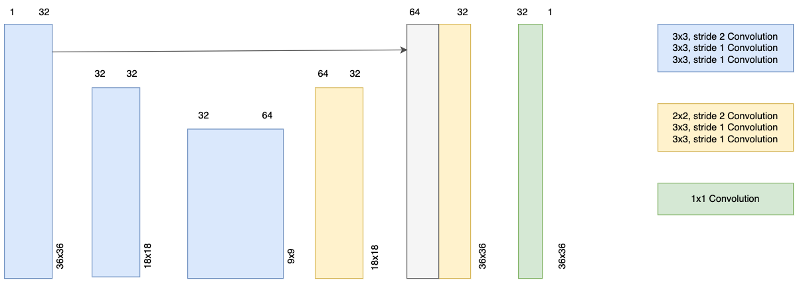
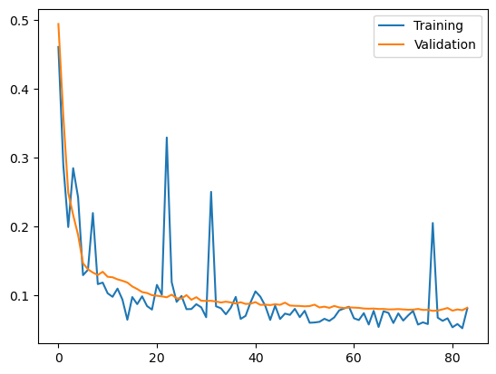
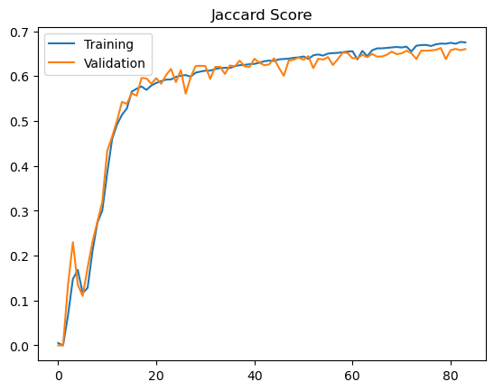
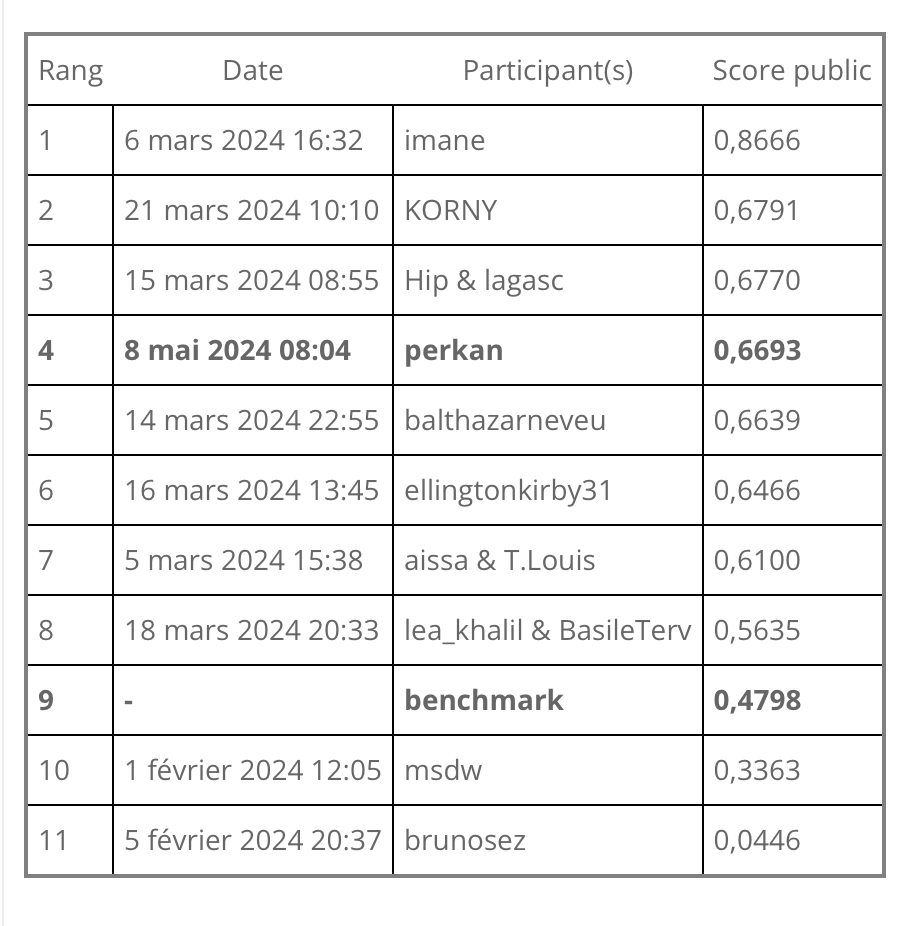

This project was developed for a ChallengeData competition, presented by SLB and focused on semantic segmentation. Semantic segmentation is a crucial task in computer vision, involving the classification of each pixel in an image into a specific category. You can read more about the competition and the requirements here.

The UNet-inspired Convolutional Neural Network architecture was chosen due to its effectiveness in biomedical image segmentation. The model includes an encoder-decoder structure that helps in capturing the context and fine details of the images. There are three triplets for down-sampling (blue) and two for upsamping. There is also one skip conncetion, which helps in preventing vanishing gradient.
Before training the model, the input data needs to be preprocessed. First, I imputed NaN values with 0's. Next, I applied horizontal and vertical flip to augment the dataset. This is a convenient trick when dealing with CNNs, since it increases your training set by several factors and also helps the network generalize the desired patterns better. Treating outliers seemed to make the predictions worse.
The downsampling step involves three consecutive convolutional layers, each followed by a ReLU activation function. This helps in capturing the high-level features and reducing the spatial dimensions of the input.
The upsampling step also consists of three convolutional layers, each followed by a ReLU activation function. This helps in recovering the spatial dimensions and generating the final segmentation map. I tried applying batch normalization, but it degraded the perfomance. Droput was also unhelpful, probably because the network was not that close to being overly complex given the input.
The weights of the network are initialized using a Kiming He normal distribution. The Kaiming initialization method is calculated as a random number with a Gaussian probability distribution with a mean of 0.0 and a standard deviation of \( \sqrt{\frac{2}{n}} \), where \(n\) is the number of inputs to the node. This initialization strategy helps in stabilizing the training process and improving the convergence speed. It works particularly well for the task of semantic segmentation. You can read more about it in their paper here
Unlike traditional UNets, this network does not use maxpooling layers due to the small dimensions of the input images. Instead, it relies on the convolutional layers to halve the dimensions while also learning features. You could say, we have too few pixels to lose. Moreover, the dimension being only \(36\times 36\), I could only easily make a "three level" network instead of a 5 level one. Once the dimension of the input into a hidden layer becomes odd, the things get a bit more complicated.


The model was trained using the Adam optimizer with a learning rate of 0.0001. The loss function used was the binary cross-entropy loss, which is suitable for binary classification tasks like semantic segmentation. The model was trained for 84 epochs with a batch size of 128 for training and 256 for validation. Why different sizes? Training requires roughly twice as much memory (forward pass and backpropagation) than validation (only a forward pass). The training data was split into 80% training and 20% validation sets to monitor the model's performance during training. In the competition, the score is given as the intersection of the union or Jaccard Index over the image pixels. Hence, IoU was estimated at every iteration as the average over all batches of validation examples.

If you would like to see my code, hit me up on LinkedIn and I will gladly share it.
For more details, visit the project page.